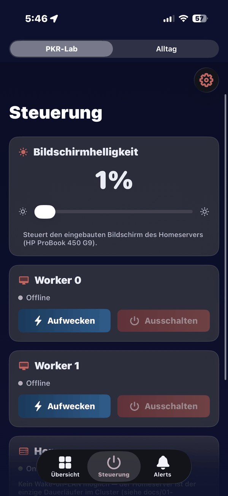
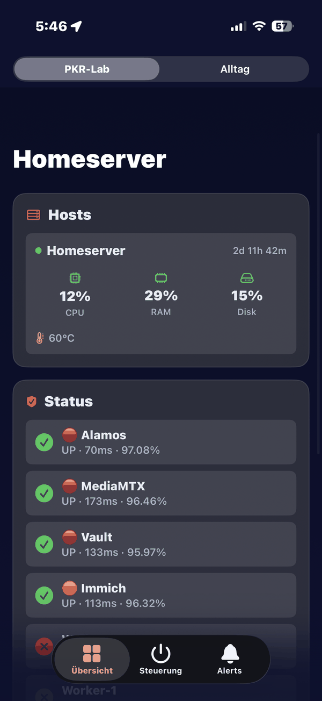
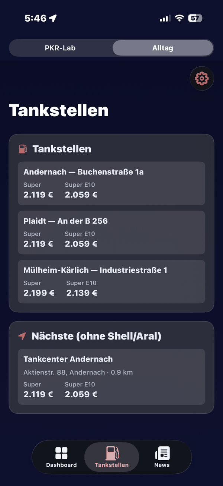
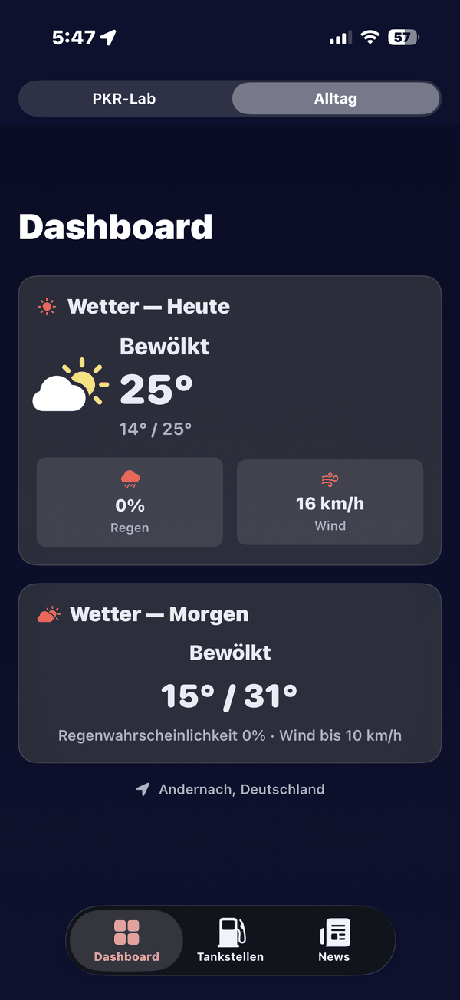

Eigene iOS-App
PKR-Lab – die App zu meinem Homelab
PKR-Lab ist meine private iOS-App: Sie steuert capulus-core direkt vom iPhone aus und bündelt ein paar nützliche Alltags-Tools an einem Ort – Homeserver-Fernsteuerung und Live-Status auf der einen Seite, Tankpreise, Wetter und News auf der anderen. Aktuell nur für mich selbst gebaut, nicht im App Store.




Bereich „PKR-Lab“
Der Homeserver in der Hosentasche
Egal ob unterwegs oder auf der Couch: Der PKR-Lab-Bereich der App zeigt den Zustand von capulus-core in Echtzeit und erlaubt direkten Eingriff, ohne SSH-Session oder Dashboard im Browser aufzumachen.
- Bildschirmhelligkeit des Homeservers per Slider steuern
- Worker-Nodes per Wake-on-LAN aufwecken oder sauber herunterfahren
- Live CPU-, RAM-, Disk- und Temperaturwerte des Homeservers
- Health-Check aller Dienste – inklusive Uptime-Prozent und Latenz
Bereich „Alltag“
Nützliche Tools für den Rest des Tages
Neben dem Homelab-Teil hat die App einen zweiten Bereich für Dinge, die ich täglich brauche – ohne dafür drei verschiedene Apps öffnen zu müssen.
- Live-Spritpreise fest hinterlegter Tankstellen (Super & Super E10)
- Umkreissuche für die nächste Tankstelle – mit Marken-Ausschluss
- Wetter für heute und morgen, standortbasiert
- Eigener News-Tab für den schnellen Überblick
- Rhein-Pegel sowie Sonnenauf- und -untergang im Alltag-Modus
Fragen zur App?
PKR-Lab ist ein privates Projekt und aktuell nicht im App Store. Der Quellcode liegt im Repository capulus-ios auf GitHub (dort heißt die App „Homeserver Dashboard“), das Backend carplay-api läuft im Cluster. Bei Interesse an der Umsetzung oder ähnlichen Ideen fürs eigene Homelab, meld dich gern.